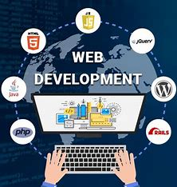
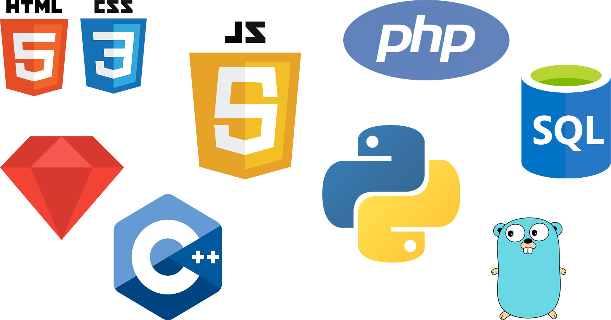

" I am Proficient in front-end development using HTML, CSS, and JavaScript to create engaging user interfaces and responsive websites.
Skilled in back-end development with experience in server-side programming using languages like Python, Ruby, PHP, or Node.js.
Familiarity with full-stack development, capable of handling both front-end and back-end aspects of web applications.
Knowledge of database management using systems such as MySQL, PostgreSQL, or MongoDB for efficient data handling.
Experienced in deploying and maintaining web applications, ensuring ongoing functionality and security."
My skills
Web Development

App Development
Proficient in mobile app development for Android and/or iOS platforms using programming languages like Java, Kotlin, Swift, or Objective-C.
Strong knowledge of mobile UI/UX design principles, ensuring intuitive and visually appealing user interfaces.
Experienced in integrating APIs and web services to enable seamless data exchange between mobile apps and back-end systems.
Familiarity with cross-platform development frameworks such as React Native or Flutter, allowing the creation of apps for multiple platforms simultaneously.
Skilled in debugging, testing, and optimizing app performance to deliver a smooth user experience.
Software Development

Proficient in multiple programming languages such as Java, Python, C++, or others, with a strong understanding of algorithms and data structures.
Skilled in software design, development, testing, and implementation, adhering to industry best practices and coding standards.
Experienced in collaborating with cross-functional teams to analyze requirements, identify solutions, and deliver high-quality software products.
Familiarity with version control systems (e.g., Git), agile methodologies, and continuous integration/continuous deployment (CI/CD) pipelines.
Strong problem-solving abilities and a passion for learning new technologies to stay updated with the latest industry trends.